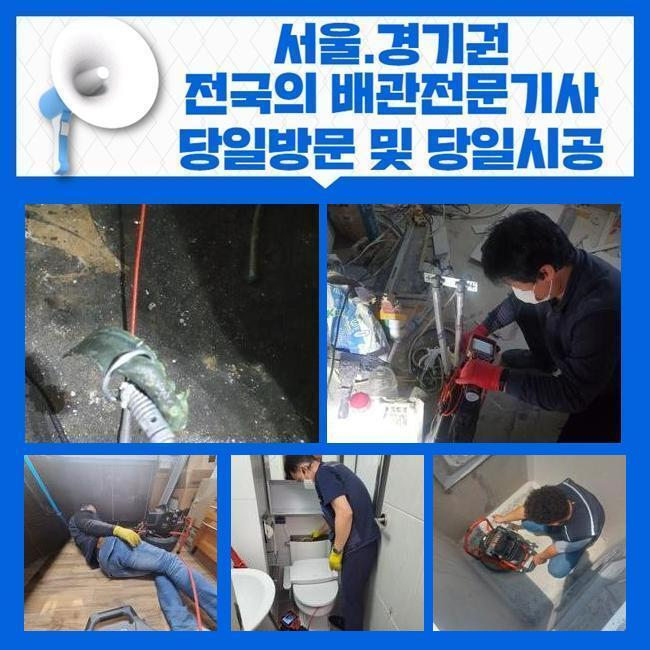
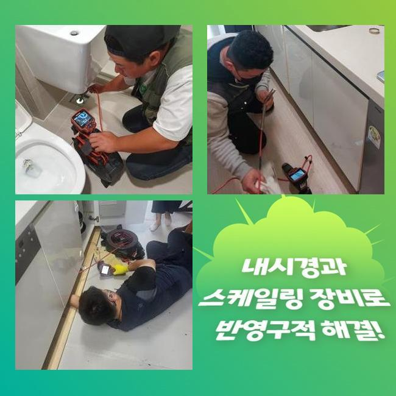
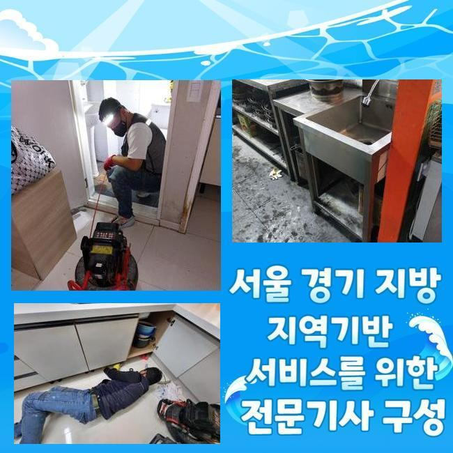
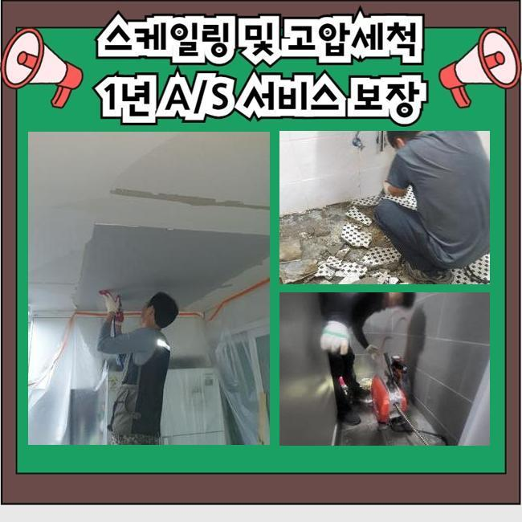
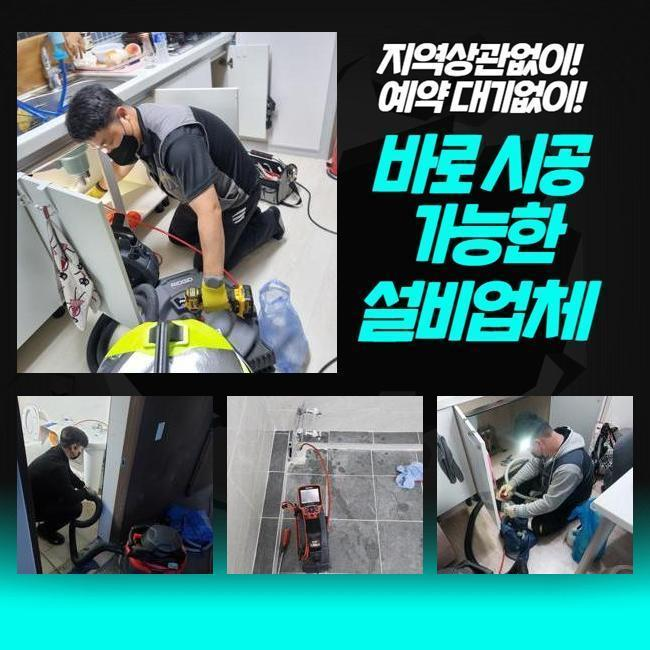
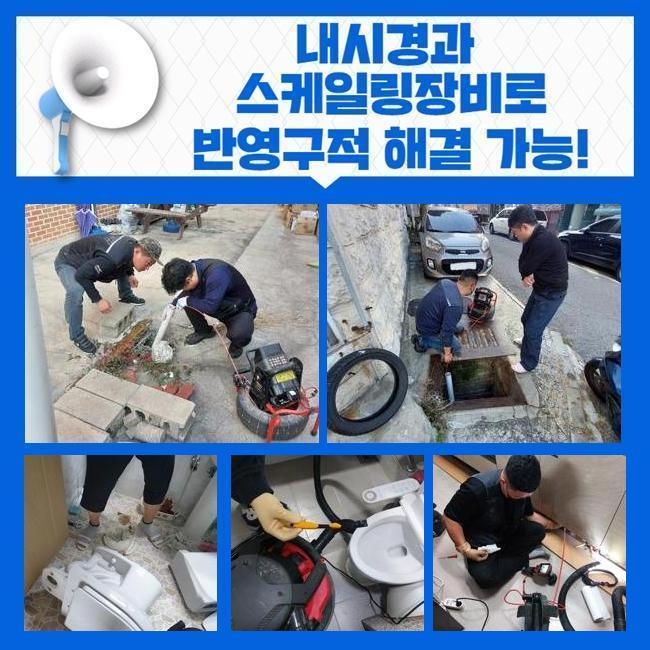
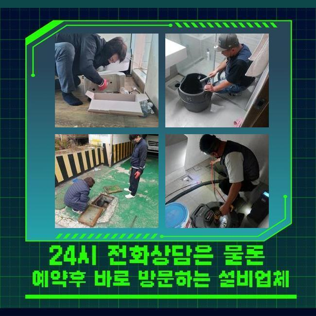

🏠 현덕면오수관역류 신평동 맨홀역류 통수전문
용인 하수구막힘 전문 시공 후기

📋 작업 개요
- 위치: 용인
- 서비스 유형: 하수구막힘, 배관막힘, 맨홀막힘, 역류해결, 뚫는업체, 배관청소, 고압세척
- 작업 일시: 2025. 1. 19. 21:24
- 업체명: 하수구수사대 (010-5615-2118)
🔍 문제 상황
현덕면오수관역류 신평동 맨홀역류 통수전문
어느장소든 배관이 막히면 조속하게 방문해서 해결해내는 업체랍니다
대부분의 경우에는 셀프적으로 처리해볼때 배수구 클리너나 락스같은 것들을 사용하실겁니다
클리너를 활용하면 배관안속에 누적된 오염물질들을 소거하는데 도움은 됩니다
용액을 부어봐도 제거하기 까다로운 이물질이 있습니다
대표로 여러가지의 오염물이 돌처럼 딱딱하게 굳어지는 고착물질을 제거하는것은 어렵죠
석회물질의 경우에는 내시경카메라로 이물의 지점과 형태를 정확히 파악하고 알맞은 방법대로 제거해내는 과정들이 요구됩니다
업체의 경우에는 어떤방법을 통하여 굳은 오염물질을 소거시키는지 며칠전 방문한 작업내용으로 안내드릴게요
이번시간에 알아볼 현장장소는 가정집안에서 발현된 막힘문제죠
화장실부분에 배수상태가 느려졌다고 하시면서 문의를 주셨습니다
의뢰자분이 말씀하신것과 현장상태를 살피면서 원인에대해 알아보았어요
전달주신 사항으로는 배수상태가 점점 느려졌으며 퀴퀴한 악취또한 동반된 상태라고 전해주셨죠

🔎 원인 분석
💡 전문가 진단: 정밀 진단 장비를 사용하여 슬러지의 고착 여부를 판명하고 타격/세척 작업을 실시했습니다.
직접 뚫어보려고 과탄산소다와 락스로 세척하신 상황이었어요
그러나 이상한 냄새는 없어지지않고 배수상태도 원활하게 돌아오지 않으셨죠
시간이지날수록 되려 배수상태는 심각하게 막혀버려서 결국은 저희한테 문의하신 것이랍니다
의뢰자분이 전달해주신 증상들과 현장상황을 보면서 원인 찾기에 돌입했어요
악취문제가 발현된 막힘문제의 경우엔 막힌원인과 관련하여 정확히 찾는게 중요한데요
먼저 석션장비를 활용하여 바닥쪽에 고여있는 물들을 제거한후 장착된트랩을 분리하기 시작했어요
하수구주위를 확인해봤는데 육안만으로 상황을 알아내기가 불가했어요
배관내부를 들여다볼수있는 하수관내부 촬영기계를 사용해봤어요
카메라장비가 하수구내에 투입되자마자 군데군데 오염물질이 화면에 나타났어요
그치만 막힘문제를 유발시킬 정도가 아니어서 더욱더 깊숙하게 주입해보니 막힌이유를 알수있었죠
머리칼과 샤워용품 찌꺼기들이 오랜시간 퇴적된 석회덩어리 이물이었어요
배관속에 달라붙어 누적된 덩어리이물은 물길자체를 좁게하고 좁은통로로 오염물이 연속해서 쌓이면서 악취문제도 일어난것이죠

🔧 작업 과정
고착물질의 경우엔 여러가지의 이물이 뭉치며 굳은형태로 만들어지게 되는것인데 막힘문제가 발생하는 확고한 원인임을 알수있겠죠
시간의 흐름마다 단단해질수 있을 뿐 아니라 제거방식도 굳은형태마다 달라질수있죠
현장에서 보였던 이물은 단단한 정도와 크기가 심각해보이지 않아서 석션기를 통해서 제거해낼수 있었죠
석션기의 경우 배관내에 쌓여진 잔여물을 빨아들여주는 장비인데요
저희들은 배관파손이 일어나지 않게끔 세심한 방법으로 청소하고자 내시경도 투입한채 작업해 주었죠
내시경으로 살피면서 이물이 발견된 위치에서 석션기를 작동하여 이물질들을 소거시켰죠
하수도 깊은곳도 내시경을 투입하여 오염물들과 슬러지들을 청소했죠
오염물제거를 상세하게 검수한후 내시경을 투입해서 재차 배관내부를 살피는걸 반복하면서 착수했어요
반복적인 과정을 거치니 남겨져있었던 기름때나 이물들이 깔끔히 소거된게 화면에보였죠
이물을 전체적으로 제거하자 심했던 악취문제도 점점 사라졌어요
마치는 작업으로 배수를 살펴보기위해 물을틀은후 배수구에 흘려보내면서 배수가 정상적으로 진행되는지 알아보았죠
많은양으로 이물질들을 제거했기에 문제를 보이지않고 흐르는것을 확인했죠
테스트과정을 끝내고나서 철수했죠
여러번 말씀드렸지만 전문업체를 통해 해결하는것이 필요한이유를 설명드리자면 막힘문제가 일어난 이유에대해 명확히 밝혀내야지만 뚫을수있겠죠
단단하게 굳어진 이물의 경우엔 셀프 제품으로 없애기란 어렵답니다
그러나 해결하지않고 내버려둔다면 물이새거나 넘치는 현상들로 불거질수가 있답니다
단단한 형태로 오염물들이 석회화 되었다면 다른장비들이 사용되기도 합니다
샤프트기라는 장비를 통해 고착물을 분쇄시킬수 있으므로 막힘정도마다 활용하는 도구가 달라지기도 하죠
배관이 막혔을때 인터넷에서 검색했던 다양한 방법들로 해결할수있다고 생각하십니다


✅ 작업 완료
이런 방법들을 시도하더라도 배수되는것이 느리게 흘러가거나 심각한 냄새도 하수도에서 올라올경우 전문가를 불러서 처리하셔야 합니다
화장실처럼 물이 빈번하게 이용되는곳은 간헐적으로 점검하여 막힘증세들을 예방해주시는게 제일 좋은방법이에요
셀프적으로 방지할수있는 방식을 간략히 말씀드리면 트랩과 배수구망을 설치하면 막힘현상이나 악취문제를 예방해볼수 있답니다
아파트나 빌라처럼 다세대가 거주하는 시설이라면 조속한 처리가 필요하니 언제라도 맡겨주신다면 조속히 내방해드릴게요
작업계획을 명확히 공개하므로 작업이 필요하실때 문의주신다면 상세하게 상담을 진행해드릴게요




⚠️ 하수구 배관 막힘 예방 및 관리 가이드
- ✅ 머리카락, 비닐, 물티슈 등 물에 분해되지 않는 이물질은 하수구 유입을 절대 금지해 주세요.
- ✅ 하수구 거름망을 씌우고 모여진 이물질은 주기적으로 쓰레기통에 바로 비워주셔야 합니다.
- ✅ 배관 노후가 심할 경우 이물질이 더 쉽게 걸리므로 주기적인 배관 세척(고압세척 등)을 권장합니다.
- ✅ 작업 후 1년 이내 재발 시 하수구수사대에서 무상 A/S 보증 서비스를 제공합니다.
💡 핵심 정리
- 확실한 장비 작업(내시경 점검 및 샤프트 스케일링)으로 원인을 뿌리 뽑습니다.
- 작업 후 1년 이내에 동일한 부위 재발 시 100% 무상 A/S 서비스를 보장합니다.
- 서울 · 경기 · 인천 전 지역에 24시간 언제든 긴급 출동할 수 있도록 항시 대기 중입니다.
❓ 자주 묻는 질문 (FAQ)
🚨 용인 하수구막힘 문제로 고민이신가요?
정확한 원인 진단과 확실한 시공으로 재발 없는 해결을 약속드립니다.
24시간 긴급 출동 | 서울 · 경기 · 인천 전지역 | 1년 내 재발 시 무상 A/S